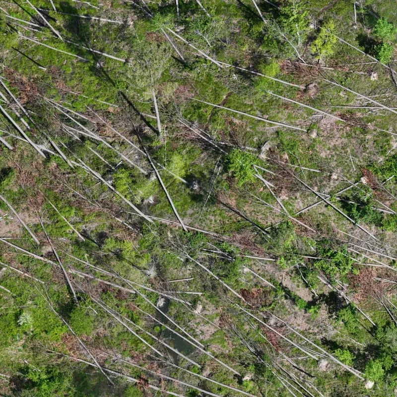
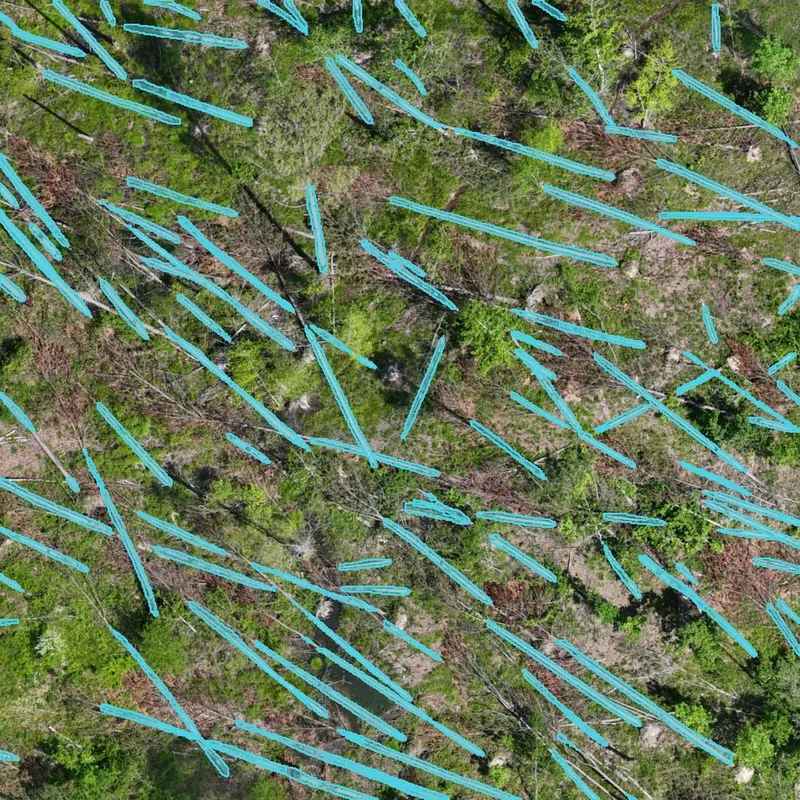
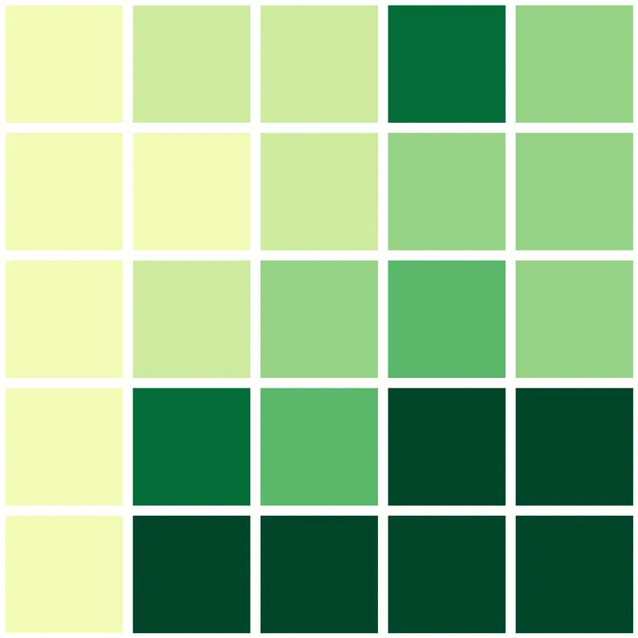
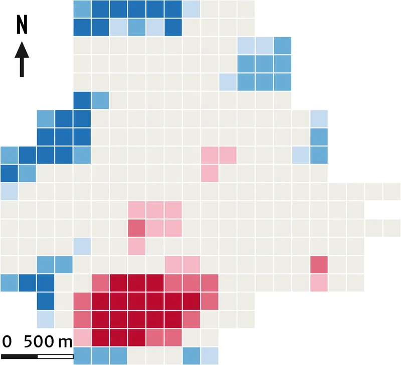
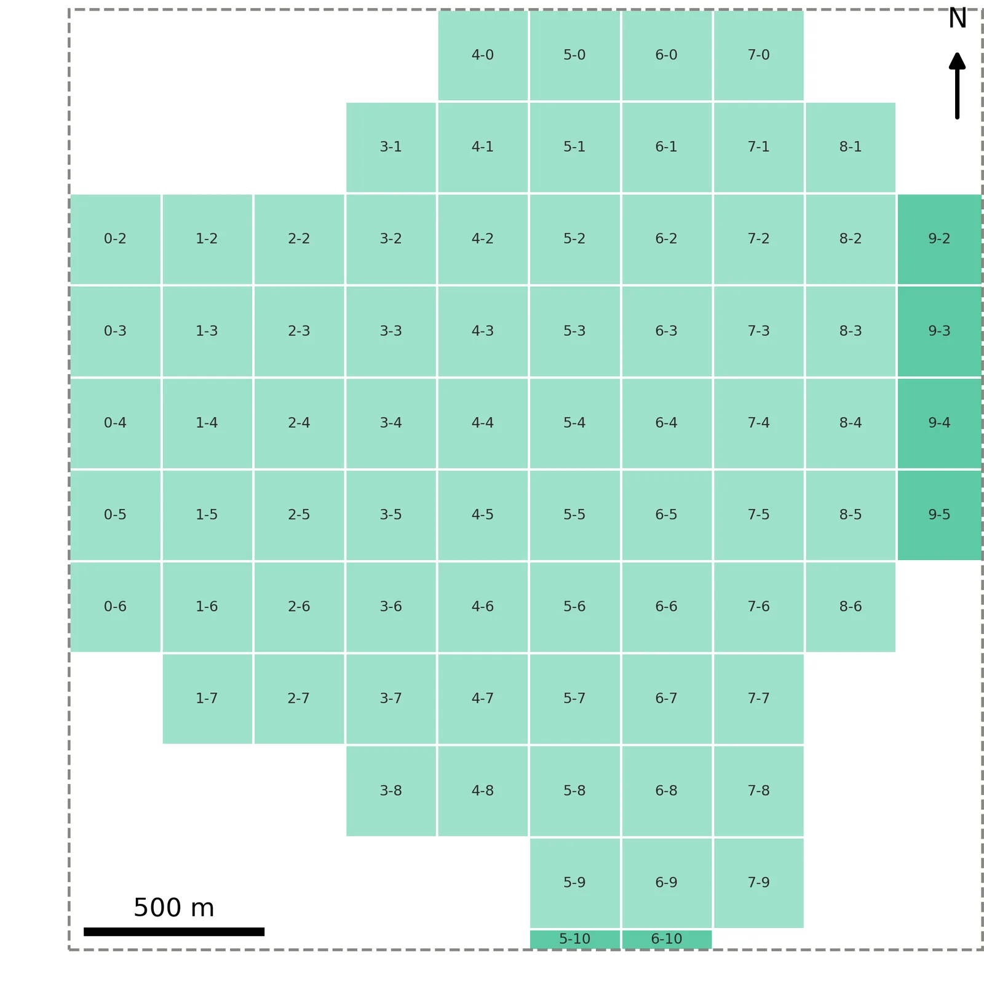
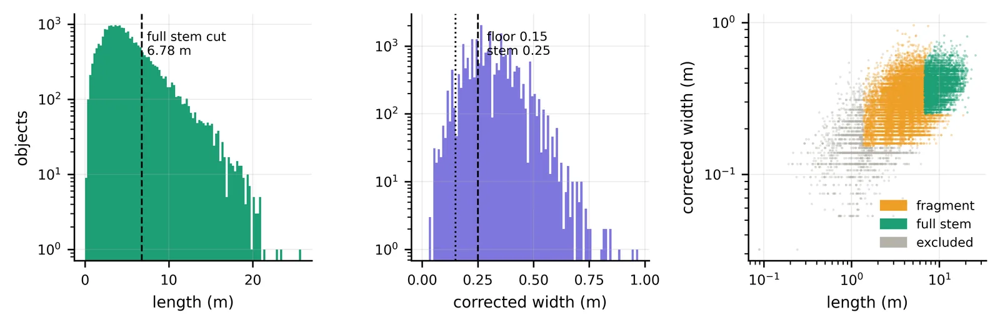
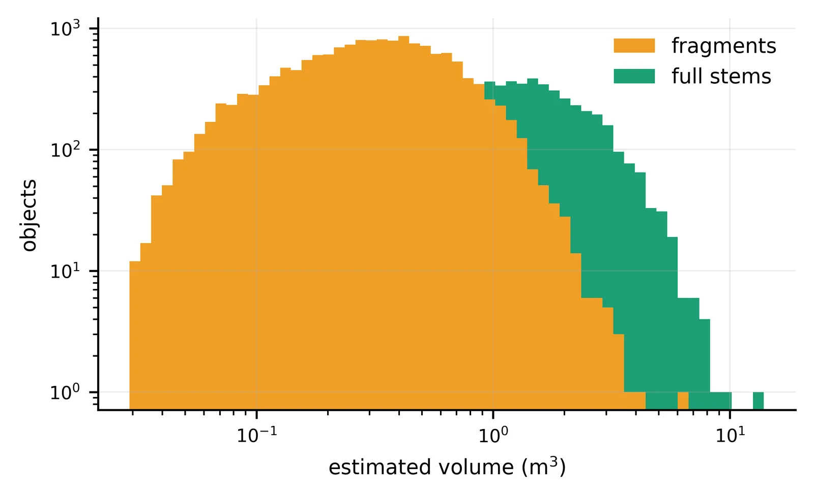
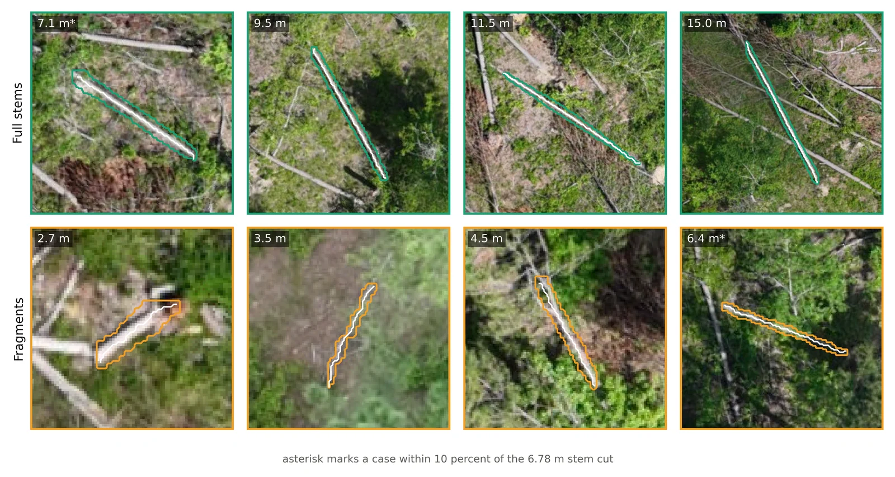

Spatial analysis: is the clustering real?
Wood volume per hectare was tested for spatial autocorrelation across the 300 quadrants, using queen contiguity (neighbors share an edge or corner), row-standardized weights and 999 permutations.
0.378Global Moran's I, pseudo p = 0.001
High-volume quadrants sit next to other high-volume quadrants far more than chance would produce.
What it means for land managers
Methods as a GIS workflow
From a raster to vector features to statistics on a grid. Each piece is georeferenced by its centroid, and lengths are measured in projected meters (UTM zone 17N).

Orthomosaic raster
0.0508 m pixels, cut into 76 tiles covering 478.7 ha.

Instance masks
YOLOv8s-seg, trained on 15,809 hand-drawn outlines, outlines each piece.
Vector features
Each piece gets length, width, volume and class. A full stem is 6.78 m or longer, and passes the width and elongation rules.

Zonal statistics
Pieces and volume are summed per 127 m (1.6 ha) quadrant.

Spatial statistics
Global Moran's I and Getis-Ord Gi* hot spots on the quadrant grid.
Maps use 127 m (1.6 ha) quadrants; the manuscript also reports per-tile (6.45 ha) summaries.
A quarter of the pieces, most of the wood
Full stems are few, but they hold most of the volume.
Results from the paper
Figures from the manuscript. Captions follow its wording; the bold line is the takeaway.





Data and reproducibility
The quadrant table behind the map. Grid row and column only: nothing in these files can locate the site.
| Field | Meaning |
|---|---|
id, row, col | Quadrant label and grid position. Row 0 is the north edge. One grid unit is one 127 m quadrant. |
area_ha | Imaged area of the quadrant. Edge quadrants are clipped and smaller than 1.6 ha. |
pieces, full_stems, fragments | Counted pieces by class. |
volume_m3, volume_full_m3, volume_frag_m3 | Estimated wood volume, total and by class. |
vol_ha, pieces_ha | Volume and pieces per hectare of imaged area. |
stem_share | Percent of the quadrant's volume in full stems. Empty where there is no wood. |
gi_class, gi_z, gi_p | Getis-Ord Gi* class (hot or cold at 90, 95 or 99% confidence, or ns), z-score and two-sided pseudo p-value. |
rank, densest10 | Rank by volume per hectare (1 is densest) and whether the quadrant is in the densest 10% of area. |
Limitations
- Volumes are image-based estimates and are not yet field-validated.
- Small pieces are under-detected, so counts are conservative.
- Results depend on the 127 m quadrant size; the manuscript also reports per-tile summaries.
Team
- Dang Hoang Project Manager, AI@UGA, University of Georgia
- Rishab Subramaniyan AI@UGA, University of Georgia
- Owen Norman Brown University
- Joey Hattan AI@UGA, University of Georgia
- Roger C. Lowe III Warnell School of Forestry and Natural Resources, University of Georgia
Resources
- Source codePipeline, classification rules and evaluation, MIT licence
- Results in detailEvery reported number, with how it is computed
- Spatial statisticsMoran's I, Gi* hot spots, method and caveats
- PaperIn preparation